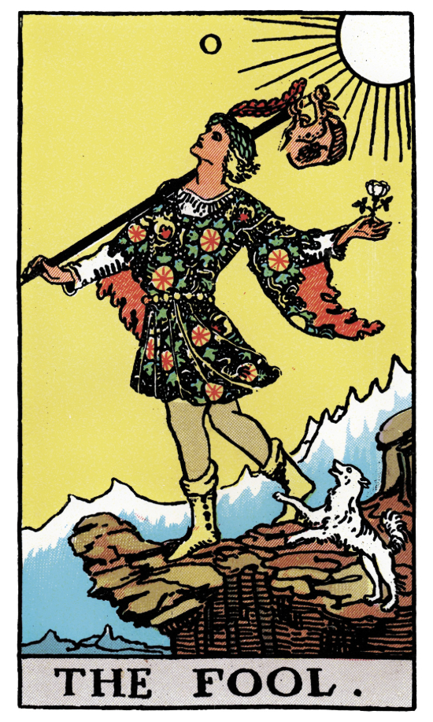

<div class="post tarot-post"
     data-date="2026-03-16"
     data-category="tarot"
     data-subcategory="year-cards"
     data-month="major"
     data-tags="tarot, major arcana, The Fool"
     data-homepage="false">

  <div class="post-bg">
    <div class="post-content">

      <!-- LEFT COLUMN -->
      <div class="post-left">

        <div class="post-date">mar 16, 2026</div>

        <!-- Card Image -->
        <div class="image-wrapper">
          
        </div>
        <!-- Keywords Block -->
        <div class="keywords-post">
          <p><strong>KEYWORDS</strong></p>
          <ul>
         <li>new beginnings</li>
         <li>leap of faith</li>
         <li>spontaneity</li>
         <li>optimism bias</li>
         <li>naivety</li>
         <li>adventurous</li>
         <li>ingenious</li>
         <li>independance</li>
         <li>head-in-the-clouds</li>

          </ul>
        </div>

        <!-- Edit Controls -->
        <div class="post-edit-controls-left">
          <button class="edit-post-btn">Edit Post</button>
          <button class="save-post-btn" style="display:none;">Save Post</button>
        </div>

      </div>

      <!-- RIGHT COLUMN -->
      <div class="post-right">

        <h2>0 - The Fool</h2>
<p>The Fool lives in a world of his own - its vivacious, creative, and for a split moment, he sees it face on in his material world. He moves towards his dreams with an idealistic perspective; star-struck by the potential, he follows it gleefully without a care in the world - even if it may bring him to his own demise. Will he reach the golden skies before he falls behind?.. Or was it fools gold all along? </p>


    <!-- Collapsible Section -->
 <div class="zodiac-section perma-open">
  <h3 class="collapsible-header">
    ᯓ★ continue...
    <span class="arrow">▼</span>
  </h3>
<div class="collapsible-panel">
 <div class="panel-inner">
   
<p>The fool represents youthful exubrance and blissful ignorance. He is pure potential and opportunity - unconditioned, unburdened, perpetually curious. Hes attached to little, even that which he needs is sprawled around like a prop. He toys with risks - not because hes a daredevil - but because his innocence turns everything into a play, into a game, into an experience. he urges one to be a free spirit and follow their hearts, even if it means taking risks, being spontaneous, and going against the grain. However, theres risks of having lack of attachment to external forces in life. its important one remains grounded and listens to their instincts, intuition, or companions.</p>

<p class="atelier-table-title">
Traits
</p>
<div class="atelier-table-wrapper">
  <table class="atelier-table">
    <tbody>
      <tr>
        <td>yes/no:</td>
        <td>yes</td>
      </tr>
      <tr>
        <td>element:</td>
        <td>air</td>
      </tr>
      <tr>
        <td>movement:</td>
        <td>wandering</td>
        </tr>
      <tr>
        <td>Sequence:</td>
        <td>changeable event</td>
      </tr>
      <tr>
        <td>planet:</td>
        <td>uranus(/mercury)</td>
      </tr>
      <tr>
        <td>number:</td>
        <td>0</td>
      </tr>

    </tbody>
  </table>
</div>


        <div class="placement">
        <h5 class="collapsible-header">Meanings </span>
        <span class="arrow">▼</span></h5>
            <div class="collapsible-panel">
            <div class="panel-inner">

<h3>Imagery</h3>
<p>The imagery shows a youthful man wandering along the cliffside. Hes gazing up at the golden sky, the wind blowing in his hair. In his left hand, he loosely holds up a knapsack. In his right, a white flower. Hes so enthralled he doesnt notice hes swiftly arising at the edge. Jagged mountains await below, and nature itself seems to be warning him: the wind blows against him, his dog jumps up at barks to alert him - yet it doesnt phase him.</p>

<p>despite representing new beginnings, the fool obviously bears the marks of his past experiences (his belongings and dog) so a journey mustve taken place for him to get so far in the first place. The fools journey always repeats, after its climax it circles back around, and continues. The mountains in the backround can be equated to that previous journey that took place prior - its the build up to the current moment.</p>

<p>The jagged mountains mirror the cliff - dipping where it dips, rising where it rises - until the edge.. where instead of dipping, it flattens out and continues. The pattern breaks, and its up to The Fool to dictate how it continues. To me the mountains represents the previous cycles and acts as a guide to whats coming ahead. It could be equated to ones intuition/the universe guiding you, everything in the backround thats influenced the present moment. The cliffs edge is the moment one has to put it to use and takes a leap of faith towards faith. </p>

<p>If the continuation of the path now depends on The Fool, the only “tool” available is what he already carries. The knapsack represents retained knowledge. The staff, a straight and stable object, becomes a potential bridge. For him to get past this, there must be something beyond the visible edge - another side not yet seen. showing how this moment may be the pivotal moment before ones pitfall. A pitfall is of course something you climb out of eventually - but how you choose to act in that very moment may impact whether or not it even happens - or the impact of such.</p>
  
<p>Upright, it could represent one putting their  past knowledge (or 'baggage') to use and climbing across this pitfall with ease, continuing their journey. </p>

<p>Reversed, it could represent taking on a foolish manner and waltzing across the cliffside ASSUMING your path will magically fix itself up (because 'it did in the past,' or 'your intuition tells you itll be fine,' - which it will be!.. after you fall down a pitfall with nothing but your past baggage to ruminate in until you learn and crawl yourself back out.</p>

<p>The sun appears to be rising - which shows a unified sense of identity. theres no mask to The Fool - what you see is what you get. Their inner motivations fuels their outer presentation. This innate confidence gives him high energy and strong resilience. This may also be equated to The Fools upcoming awakening..The moment where he gets a jolt of clarity - whether its from pure ingenious decisions, or the fall from his high.</p>

<p>The Fools dog stands back barking up at the man to warn him of whats upcoming. Despite his loyalty, the path he walks ends sooner than the fools does, and he doesnt plan on walking off the edge with him. instead, he halts and stands up on his back legs as a final attempt. This signifiesthe need to listen to the concerns of others or even yourself. Your friends, confidants, and intuition can only take you so far. Once you choose to abandon it, you cant expect it to fall with you.</p>

<div class="post-divider"></div>

<h3>Numerology</h3>
<p>The fool marks the very start of the journey - the moment one decides to act upon the given energy. As the "0" of the Major Arcana, it represents a lack of tangible form: pure potential and enery ready to be shaped into an experience. His direction shows this - he moves forwards, focusing on the bright sides of his situation - while the potential for downfall approaches with each step taken while his head remains in the clouds. He represents possibility, urging one to follow their heart - but to remain grounded in doing so. Its the need to listen to your instincts and the universe when it tries to guide you.</p>

<div class="post-divider"></div>

<h3>Planet</h3>

<p>The fool is commonly associated with uranus as both represent spontanaity and freedom. The fool is independant in nature, even if it comes back to bite him. He marches to the beat of his own drum, even when its 'different,' even when its advised against, even when it brings unexpected situations.</p>

<p>However, i personally associate mercury with the fool. Mercury is the planet of innovation. Its constantly adventuring through out the zodiacs, always seeking out new experiences. Mercury is very impressionable, and the fool is quite naive - marked by his pure potential waiting to be used. </p>

<div class="post-divider"></div>

<h3>Color Symbolism</h3>
  
<p>The Fool wears a green hat with a red feather in the top that flows in the wind. His mind is quite literally in the skies - his gained abundance leads him to higher and higher goals, even if they remain out of his league.</p>
  
<p> He has on a white, long-sleeved undershirt with a loose, colorful, torn tunic ontop. The outside is adorned with depictions of fruits and leaves, and the inside of it is a bright red. Around his waist, golden beads are wrapped to support it. His purity protects him, allowing such plays of creativity to thrive. On the outside, it may look like luck and foolishness - but the underlying fire inside him drives the boy to persist even in failure. </p>

<p>For his pants, he wears pale yellow leggings - and for his shoes he wears yellow boots. Hes running off optimism - literally. </p>

<p>The sky is a pure yellow showing an overjoy of positivity and vitality. The mountains base is a deep blue, fading to white the higher up it gets, with pure white tips. Meanwhile, the current cliff the fool walks upon is brown. This may paint a picture of how The Fool percieves his past experiences, the low points marked by deep emotions - but he rises to a state of rebirth and is purified in nature. The current moment is what The Fool remains grounded in - even to his own detriment. </p>

</div>
</div>
</div>
</div>
</div>
</div>


<div class="zodiac-section">
  <h3 class="zodiac-title">significations</h3>

  <!-- Categories Display -->
  <p class="zodiac-categories">
    general • love • career • finances • feelings • advice </p>

  <!-- ZODIAC BUTTONS -->
  <div class="zodiac-grid">
    <button data-zodiac="fool-general">✧︎</button>
    <button data-zodiac="fool-love">𖹭︎</button>
    <button data-zodiac="fool-career">⚖︎</button>
    <button data-zodiac="fool-finances">⛃︎</button>
    <button data-zodiac="fool-feelings">☺︎</button>
    <button data-zodiac="fool-advice">✉︎</button>︎
  </div>

  <!-- FOOL PANELS -->
  <div class="zodiac-explanations">
    <div class="zodiac-panel" id="fool-general">
      <div class="panel-inner">
     <h3>General Meaning</h3>
     
    <h4>Upright</h4>

<p>The fool signifies limitless potential brewing into new beginnings. It represents embarking on a new beginning - one may be rather naive, but theyre driven by a fiery passion and resillence. The Fool warns of an upcoming pivot moment where one must trust themselves to navigate past it - but all that you need to know, you know. Your past experiences have given you all you need to succeed - you just need to think outside the box and have a little faith.</p>

<div class="post-divider"></div>

<h4>Reversed</h4>
<p>The fool (rx) signifies reckless folly, poor judgement, and hasty decisions. One may have their head up in the clouds, over-idealizing and delusional about their future. It warns you to take a moment to stop and reconsider what youre doing, and why your situation is stagnant. You know why, dig deep and look at the steps taken to get you here. Being a backround character to your own life will result in nothing accumulating and nothing changing. One must ground themselves and take the responsibility theyve been avoiding. </p>

</div>
</div>
</div>

  <!-- FOOL PANELS -->
  <div class="zodiac-explanations">
    <div class="zodiac-panel" id="fool-love">
      <div class="panel-inner">
     <h3>Relationships</h3>

<h4>Upright</h4>
<p>When it comes to relationships, The Fool signifies following your heart. It brings unpredictable fun and pivot points for connections - representing new connections, adventures, experiences, or embarking on new milestones. Once you expand past yourself and seek out new experiences, you can find the connection you desire.</p>

<p>One may be driven by the initial excitement and entirely head-over-heels, dreaming and fantazing about the other person - even daring to take spontaneous risk. It represents letting go of fear and taking a leap of faith. Ones intentions are pure - but its because they dont tend to have a deep understanding of what "love" implicates. Theyre not concerned with the future which may lead one to acting rather reckless and naive. if romantic, the fool can represent a crush and potential for a new journey. One isnt afraid to tread unconventional paths, even if others disagree with their choices.</p>

<div class="post-divider"></div>

<h4>Reversed</h4>
<p>When it comes to relationships, The Fool (rx) is too immature to handle a relationship. represents having on rose-colored glasses. They could be unknowingly heading to their own downfall. If The Fool chooses to proceed with the idealistic delusions crafted for the connection, he'll end up alone. His companions path ends way before the fools and hes not willing to be dragged down with him - but The Fool wont notice that until he reaches rock bottom with nothing but himself. Theres the need for change and reflection. </p>


</div>
</div>
</div>

  <!-- FOOL PANELS -->
  <div class="zodiac-explanations">
    <div class="zodiac-panel" id="fool-career">
      <div class="panel-inner">
     <h3>Career</h3>

<h4>Upright</h4>
<p>When it comes to career, The Fool represents a pivotal moment to embark on milestones - starting your career, changing it, promotions, etc.. Limitless potential is brewing, one may be dreaming and contemplating about what that may bring for them. The Fool just has to make the inital bridge connecting him to his destination and hes set - problem is, said bridge brings risks that have to be overcome via ingenious spontanaity. but as long as you listen to your instincts and intuition you can succeed.</p>

<p>The fool may call upon you to listen to your heart and follow the path youre most passionate about, even if its unconvientional or frowned upon. The career chosen will bring joy and optimism. </p>

<div class="post-divider"></div>

<h4>Reversed</h4>
<p>When it comes to career, The Fool (rx) signifies the lack of insight needed to inact your goals. reckless or dangerous decisions are made without preperation, and one may lack the proper planning to uphold such and opt to neglect it entirely. They may avoid taking the necessary risks, or lack the proper commitment. They could be unreliable, their ideas too grandoise and out of touch. They could stagnate, staying in a tireless job that sucks the joy from their lives and working themselves too hard with little-to-none work-life balance. theres the need to ground oneself and analyze the situation for what it is, and the role youre playing.</p>

</div>
</div>
</div>

  <!-- FOOL PANELS -->
  <div class="zodiac-explanations">
    <div class="zodiac-panel" id="fool-finances">
      <div class="panel-inner">
     <h3>Finances</h3>

<h4>Upright</h4>
  <p>When it comes to finances, The Fool represents spontaneous spending and idealistic thinking. Ones spending is fueled by the need for adventure and exploration. This may bring unexpected financial opportunities or gambling. Impulsive spendings wont just fade into thin air so theres the need to properly consider what youre spending your money on. Sometimes, all you need, you already have. think outside the box and dont be afraid to get innovative.</p>
  
  
  <div class="post-divider"></div>
  
  <h4>Reversed</h4>
  <p>When it comes to finances, The Fool (rx) represents reckless spending, impulsive purchases, or debt. One may be scraping by with what they have on their back.</p>
  
  
  </div>
  </div>
  </div>
  
    <!-- FOOL PANELS -->
    <div class="zodiac-explanations">
      <div class="zodiac-panel" id="fool-feelings">
        <div class="panel-inner">
       <h3>Feelings</h3>
  
  <h4>Upright</h4>
  <p>When it comes to feelings, The Fool represents excitement and optimism. One may be rather curious, fantazing and thriving in their inner-world. Theyre open-minded and rather carefree, their innate confidence carrying them through strife. One may be following their heart. </p>
  
  
  <div class="post-divider"></div>
  
  <h4>Reversed</h4>
  <p>When it comes to feelings, The Fool (rx) represents hesitantation and uncertainty. One could be caught up in their fears or concerns that they dont consider the wellbeing of others. THeir chidlike impulsivity may drive others away, even if they constantly try to help. Theyre lacking the trust to take a leap of faith.</p>
  
  </div>
  </div>
  </div>
  
    <!-- FOOL PANELS -->
    <div class="zodiac-explanations">
      <div class="zodiac-panel" id="fool-advice">
        <div class="panel-inner">
       <h3>advice</h3>
  
  <h4>Upright</h4>
  <p>When it comes to advice, The Fool urges one to embrace spontaneity and take (reasonable) risks if you wish to continue. Dont shy away from imagination - but infact use it to proceed in your physical world. All you need, you already carry. you just need to learn how to put it into use.</p>
  
  
  <div class="post-divider"></div>
  
  <h4>Reversed</h4>
  <p>When it comes to advice, The Fool (rx) represents going against your intuition/instincts. One may get in-over-their head and put all their eggs in the same basket - which results in them breaking Theres the need to evaluate your goals, reflect intentions, and ground oneself, Take a moment to reflect on whats truly important to you and proceed thoughtfully. One small step at a time is enough and theres no need to rush the process.</p>


</div>
</div>
</div>
</div>


<div class="post-credits">
  <p>credits: my intuition ;p | Labyrinthos | tarot forums</p>
</div>


        <!-- Tags -->
        <div class="post-tags">
          <button class="tag-btn" data-tag="tarot">#tarot</button>
          <button class="tag-btn" data-tag="major arcana">#major arcana</button>
          <button class="tag-btn" data-tag="fool">#the fool</button>
        </div>

      </div>

    </div>
  </div>

</div>